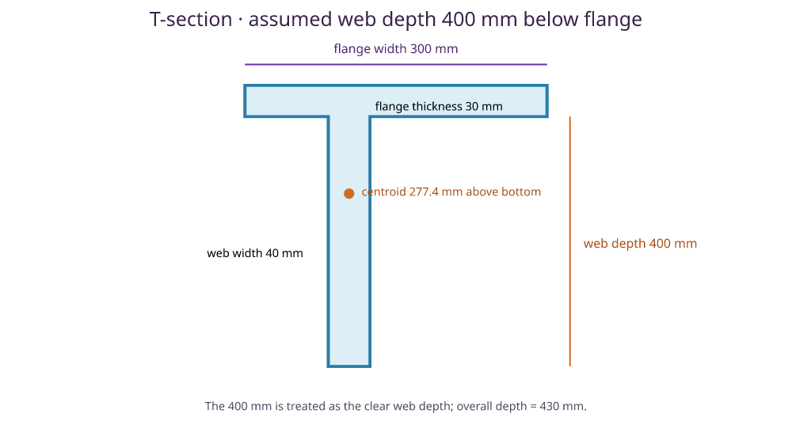
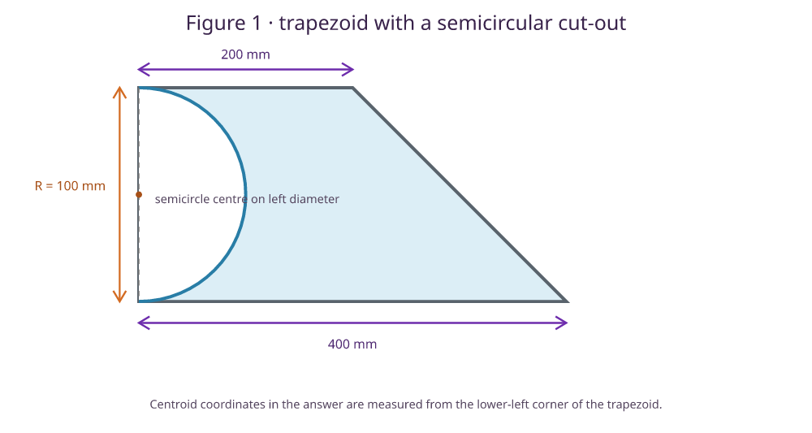
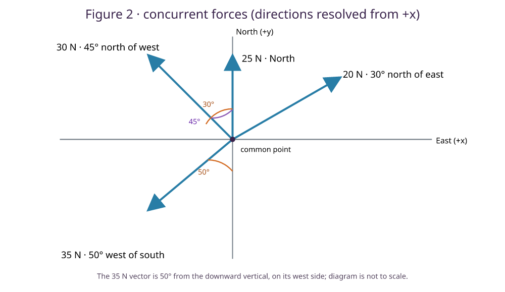
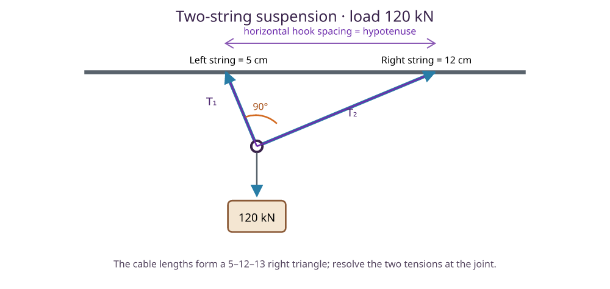
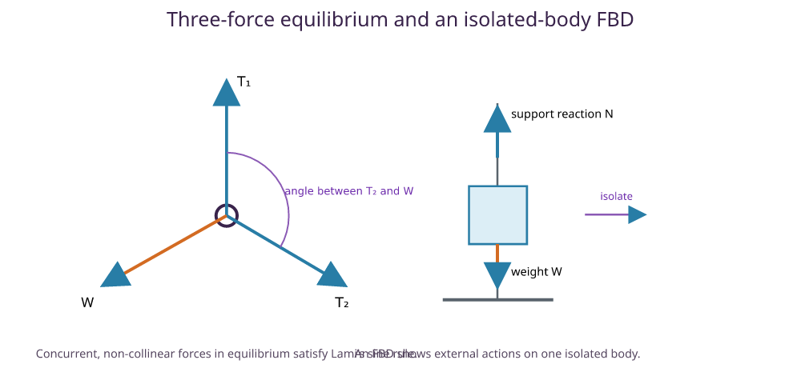
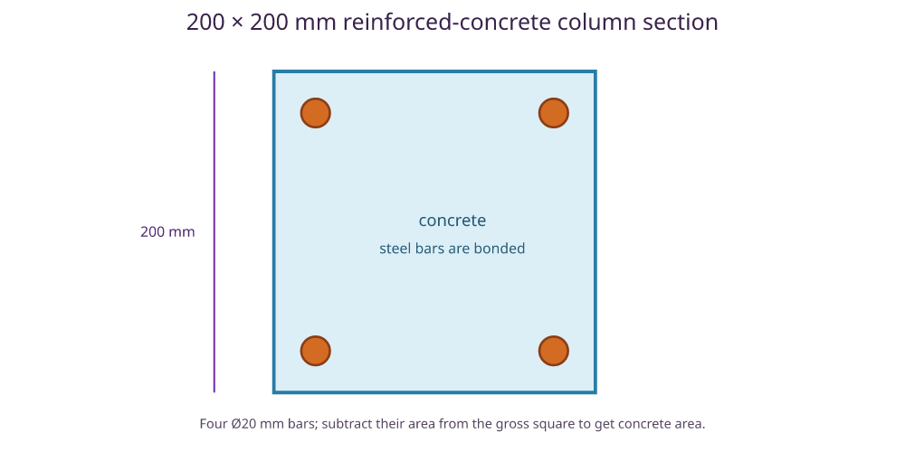
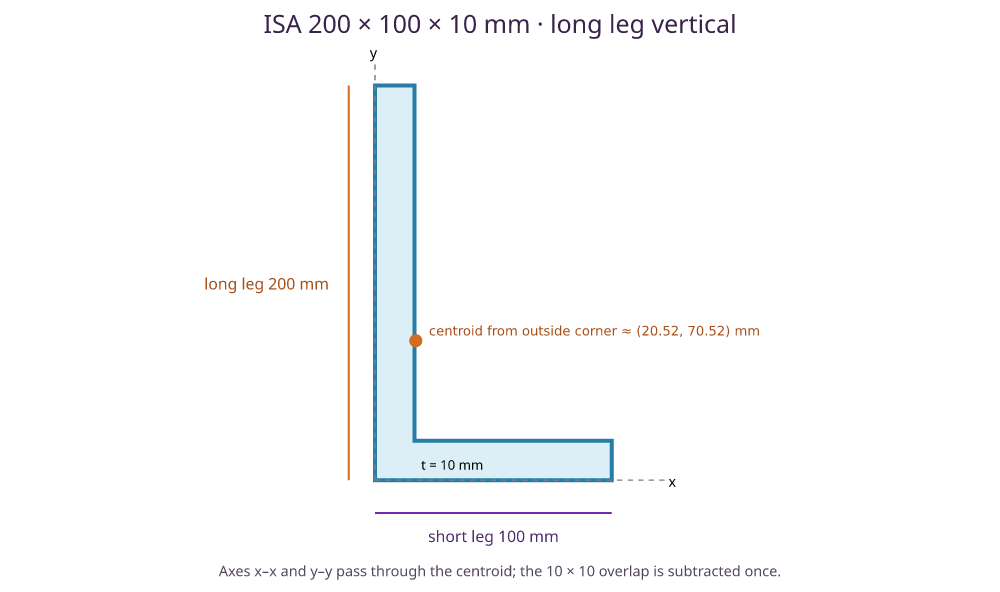
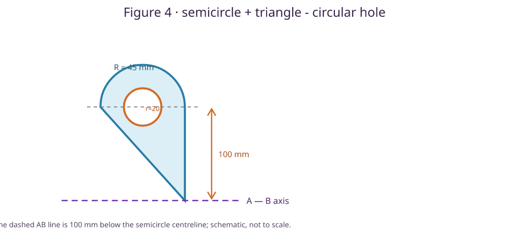

Updated supplied study solution — English only. આ નવો આપેલો ઉકેલ માત્ર અંગ્રેજીમાં છે; ભાષા બદલવાથી જવાબોનું ભાષાંતર થતું નથી. Unofficial model answers, not a GTU marking scheme; answers have not been independently verified.
Basics of Applied Mechanics
All printed parts and all OR alternatives from this paper are included. Expand a card for definitions, diagrams, derivations and worked numerical answers; select one complete printed OR branch when practising.
The supplied English paper labels this version authentic. Its printed figures and dimensions are followed, with stated assumptions where a section dimension needs interpretation.
Question 1
Printed wording, marks and worked study solution
Q1(a)Define: centroid, centre of gravity and axis of symmetry.3 marks
Model answer · 3 marks
- Centroid: geometric mean position of a line, area or volume; for a plane area, x̄ = ∫x dA/A and ȳ = ∫y dA/A.
- Centre of gravity: point through which the resultant weight of a body acts.
- Axis of symmetry: a line that divides a figure into two mirror-image halves; reflection across it leaves the figure unchanged.
A homogeneous lamina in a uniform gravitational field has its area centroid at its centre of gravity.
Q1(b)Find the centroid of a T-section with flange 300 mm × 30 mm and web 40 × 400 mm.4 marks
Model answer · 4 marks
Assume the 400 mm is the clear web depth below the flange; thus total depth is 430 mm. The section is symmetric about its vertical centreline, so x̄ = 150 mm from either flange edge.
Flange: Af = 300(30) = 9000 mm²; yf = 400+15 = 415 mm
ȳ = [16,000(200)+9000(415)]/(25,000)
= 277.4 mm above the bottom of the web
Equivalently the centroid is 430−277.4 = 152.6 mm below the top of the flange.
Assumption / convention: Interprets web size 40×400 mm as width × clear depth beneath the flange. If 400 mm is the overall depth, the web clear depth is 370 mm and ȳ = 260.63 mm above the bottom.

Q1(c)State the classification of a force system and explain each type.7 marks
Model answer · 7 marks
Classify first by whether all lines of action lie in one plane, then by their geometric arrangement.
| System | Description / example |
|---|---|
| Collinear | All forces act along the same straight line; they may reinforce or oppose one another. |
| Coplanar concurrent | Lines of action lie in one plane and meet at one point (e.g. forces at a pin joint). |
| Coplanar parallel | Lines of action lie in one plane and are parallel; same- or opposite-sense parallel forces are possible. |
| Coplanar general (non-concurrent, non-parallel) | All lines lie in one plane but are neither all concurrent nor all parallel; e.g. general loading of a rigid plate. |
| Non-coplanar concurrent | Forces meet at one point but do not all lie in one plane (3-D joint). |
| Non-coplanar parallel | Parallel lines of action are distributed in space, not in one common plane. |
| Non-coplanar general | 3-D forces are neither all concurrent nor all parallel; a full force-and-moment balance is needed. |
Collinear forces are a special concurrent case. In three dimensions equilibrium generally requires ΣFx = ΣFy = ΣFz = 0 and ΣMx = ΣMy = ΣMz = 0.
Q1(c) — ORFind the centroid of the section shown in Figure 1: a trapezoid with 200 mm top width, 400 mm bottom width, 200 mm height and a semicircular cut-out of radius 100 mm at the left side.7 marks
Model answer · 7 marks
Use the lower-left corner of the parent trapezoid as origin, x right and y up. Its vertices are (0,0), (400,0), (200,200), (0,200). Split it into a 200×200 rectangle and a right triangle, then subtract the semicircular notch.
Triangle: A₂=20,000 mm², centroid (266.667,66.667) mm
Trapezoid: AT=60,000 mm², centroid (xT,yT)=(155.556,88.889) mm
Its centroid is 4R/(3π)=42.441 mm to the right of its vertical diameter, at y=100 mm.
Anet=60,000−15,707.96=44,292.04 mm²
ȳ = [60,000(88.889)−15,707.96(100)]/44,292.04 = 84.95 mm
Centroid of the remaining shaded area: (195.67 mm, 84.95 mm) from the stated origin.
Assumption / convention: The semicircle is treated as a cut-out opening into the left side; its diameter lies on the left boundary of the parent trapezoid. Coordinates are measured from the trapezoid's lower-left corner.

Question 2
Printed wording, marks and worked study solution
Q2(a)Two tensile forces 46 kN and 68 kN act at 60°. Find the magnitude and direction of their resultant.3 marks
Model answer · 3 marks
Take the 46 kN force as the reference direction and resolve the 68 kN force at +60°.
Ry = 68sin60° = 58.89 kN
R = √(80²+58.89²) = 99.34 kN
θ = tan⁻¹(58.89/80) = 36.36° from the 46 kN force toward the 68 kN force
It is 23.64° from the 68 kN force toward the 46 kN force.
Q2(b)State and explain the parallelogram law of forces.4 marks
Model answer · 4 marks
If two forces acting simultaneously at a point are represented in magnitude and direction by two adjacent sides of a parallelogram drawn from that point, their resultant is represented in magnitude and direction by the diagonal through the common point.
For forces P and Q with included angle θ, resolve along and perpendicular to P:
tan α = Q sinθ/(P+Q cosθ)
Here α is the angle from P toward Q. The signs/components should be checked if θ is obtuse.
Q2(c)Determine the magnitude and direction of the resultant of the force system shown in Figure 2.7 marks
Model answer · 7 marks
Use +x east and +y north. From the printed figure: 25 N north; 20 N at 30° north of east; 30 N at 45° north of west (135° from +x); and 35 N at 50° west of south (220° from +x).
= −30.704 N
Ry = 25 + 20sin30° + 30sin135° + 35sin220°
= +33.716 N
θ = atan2(Ry,Rx) = 132.32° counter-clockwise from east
= 47.68° north of west
The negative x and positive y components place the resultant in the north-west quadrant.

Q2(a) — ORA 120 kN weight is suspended by two threads as in Figure 3: lengths 5 cm and 12 cm meet at 90°, with hooks 13 cm apart. Find the tension in each thread.3 marks
Model answer · 3 marks
The thread lengths and hook spacing form a 5–12–13 right triangle. The 5 cm thread is steeper: its direction components have magnitudes (5/13 horizontal, 12/13 vertical); the 12 cm thread has (12/13 horizontal, 5/13 vertical).
Vertical equilibrium: (12/13)T5+(5/13)T12=120
T5 cm = 110.77 kN; T12 cm = 46.15 kN
Check: the horizontal components cancel, and the upward vertical components sum to 120 kN.

Q2(b) — ORState the triangle law and polygon law of forces.4 marks
Model answer · 4 marks
Triangle law: if two concurrent forces are represented by two sides of a triangle taken in order, their resultant is represented by the third side taken from the tail of the first to the head of the second.
Polygon law: if any number of concurrent forces are represented by successive sides of a polygon taken head-to-tail, the closing side from the first tail to the last head represents the resultant. A closed force polygon means zero resultant and equilibrium.
Q2(c) — ORState and explain Lami’s theorem and define a free-body diagram.7 marks
Model answer · 7 marks
Lami’s theorem: for a particle in equilibrium under three coplanar concurrent, non-collinear forces P, Q and R,
where α, β and γ are the angles between the other two forces (the angle opposite each force). It follows from the sine rule applied to the closed force triangle.
Free-body diagram (FBD): a sketch of one isolated body showing all external applied forces, its weight, and the support/contact reactions or couples acting on it. Replace each support by its allowed reaction components; do not include internal forces unless the body is deliberately cut.

Question 3
Printed wording, marks and worked study solution
Q3(a)State all types of stresses and explain any two.3 marks
Model answer · 3 marks
Common engineering stresses are tensile (direct normal), compressive (direct normal), shear, bending/flexural, torsional and bearing/crushing stress; thermal restraint can also create normal stress.
- Tensile stress: axial pulling force per resisting area, σ = P/A; it tends to lengthen a member.
- Shear stress: tangential force per shear area, τ = V/A (average); it tends to make adjacent material layers slide.
For non-uniform stress distributions, use the appropriate local section formula rather than assuming P/A everywhere.
Q3(b)A 3 m long, 20 mm diameter steel bar carries 105 kN tensile load. For E = 2×10⁵ N/mm², find stress, strain, elongation and final length.4 marks
Model answer · 4 marks
Use a uniform circular bar and linear-elastic extension; L = 3000 mm.
σ = 105,000/314.159 = 334.23 MPa
ε = σ/E = 334.23/(2×10⁵) = 0.0016711
ΔL = εL = 0.0016711(3000) = 5.013 mm
Lfinal = 3000+5.013 = 3005.013 mm ≈ 3.00501 m
Q3(c)A 200 mm square concrete column has four 20 mm diameter mild-steel bars and carries 500 kN axial compression. If modular ratio Es/Ec = 15, find the force resisted by each material.7 marks
Model answer · 7 marks
Assume perfect bond, equal axial strain in steel and concrete, concentric loading and linear-elastic materials. For compression report magnitudes; both material forces are compressive.
Ac = 200²−As = 38,743.36 mm²
σs/σc = Es/Ec = 15
P = σcAc+15σcAs
σs = 15σc = 130.22 MPa
Pc = σcAc = 336.36 kN
Ps = σsAs = 163.64 kN
Check: 336.36+163.64 = 500.00 kN. Each of the four equal bars carries about 40.91 kN.

Q3(a) — ORDefine thermal stress and thermal strain, and write the thermal-stress equations when (1) ends do not yield (2) ends yield.3 marks
Model answer · 3 marks
Thermal strain: free strain caused by a uniform temperature change, εth = αΔT; free length change is αLΔT. Thermal stress is normal stress produced when expansion/contraction is restrained.
For a signed support-separation change δs, compatibility gives εtotal = δs/L = σ/E + αΔT, hence:
Rigid / non-yielding ends (δs=0): σ = −EαΔT
Thus heating under full restraint gives compression and cooling gives tension. If supports yield/move, enter their signed movement; the stress magnitude is E|αΔT−δs/L|.
Q3(b) — ORDefine strain energy. Explain different types of loading on a body that result in strain energy, with examples.4 marks
Model answer · 4 marks
Strain energy is the energy stored in a body as it deforms elastically. It can arise from axial tension/compression, shear, bending, torsion or restrained thermal deformation.
For a linearly elastic axial member, U = ½Pδ = P²L/(2AE) = σ²V/(2E). Loading history changes the maximum response:
- Gradually applied load: load rises from zero to P; work/energy stored U = ½Pδst.
- Suddenly applied load: constant P is applied with zero drop height and no damping; ideal maximum extension/stress is twice the static value, δmax=2δst, σmax=2P/A.
- Impact or falling load: a weight falling through height h does additional work while the member deflects. For an ideal axial bar, W(h+δ)=AEδ²/(2L); impact stress depends on h and stiffness, not simply a universal factor of two.
Real damping, member inertia, contact effects and yielding may change these ideal results.
Q3(c) — ORA 50 mm × 50 mm steel bar, 1 m long, carries 300 kN axial tension. For E = 2×10⁵ N/mm² and μ = 0.25, find changes in length, width, thickness and volume.7 marks
Model answer · 7 marks
Assume uniform uniaxial elastic tension, free lateral contraction and small-strain relations. Initial volume V = 50×50×1000 = 2.5×10⁶ mm³.
εL = σ/E = 120/(2×10⁵) = 0.000600
ΔL = εL(1000) = +0.600 mm
εlat = −μεL = −0.25(0.0006) = −0.000150
Δwidth = Δthickness = −0.000150(50) = −0.00750 mm each
ΔV ≈ εvV = 0.000300(2.5×10⁶) = +750 mm³
So the bar lengthens, both transverse dimensions contract, and the first-order volume change is an increase of about 750 mm³.
Question 4
Printed wording, marks and worked study solution
Q4(a)Define (1) Moment of Inertia (2) Section Modulus (3) Radius of Gyration.3 marks
Model answer · 3 marks
- Second moment of area (area moment of inertia): I = ∫y²dA about a stated axis; it measures the geometric distribution of area from that axis (units L⁴).
- Elastic section modulus: Z = I/c, where c is the distance from the centroidal bending axis to the relevant extreme fibre; units L³.
- Radius of gyration: k = √(I/A), the distance at which the whole area could be concentrated to give the same I; I = Ak², units L.
This section property I is not the mass moment of inertia used in rotational dynamics.
Q4(b)State and explain the parallel-axis theorem.4 marks
Model answer · 4 marks
The second moment of a plane area A about any axis parallel to its centroidal axis is:
d is the perpendicular distance between the axes. For example, for x-coordinates y measured from the centroidal axis, the parallel axis is at y+d:
= IG + Ad², because ∫y dA = 0 at the centroid.
Use the theorem only with the matching area and axis orientation; it is not IG−Ad².
Q4(c)Calculate Ixx and Iyy about centroidal x–x and y–y axes for ISA 200 × 100 × 10 mm, with the longer leg vertical.7 marks
Model answer · 7 marks
Take the outside lower-left corner as origin. Model the angle as vertical 10×200 plus horizontal 100×10 minus the 10×10 overlap.
x̄ = [2000(5)+1000(50)−100(5)]/2900 = 20.517 mm
ȳ = [2000(100)+1000(5)−100(5)]/2900 = 70.517 mm
Apply parallel-axis theorem to each rectangle about the centroidal axes and subtract the overlap:
= 12.276 × 10⁶ mm⁴
Iyy = Σ(Iy,c+AΔx²) − overlap
= 2.176 × 10⁶ mm⁴

Q4(a) — ORDefine (1) Elasticity (2) Plasticity (3) Toughness.3 marks
Model answer · 3 marks
- Elasticity: ability to recover original dimensions after unloading, within the elastic limit.
- Plasticity: ability to undergo permanent deformation without fracture after the applied stress exceeds the elastic range.
- Toughness: ability to absorb energy before fracture under stated conditions; for a tensile specimen, it is related to the area under the complete stress–strain curve per unit volume.
Toughness is not identical to hardness, strength or resilience.
Q4(b) — ORExplain the classification of engineering materials according to physical properties.4 marks
Model answer · 4 marks
A useful engineering classification groups materials by broad physical behaviour and composition:
- Metals and alloys: generally good thermal/electrical conductors, relatively strong and formable; ferrous (steels, cast irons) and non-ferrous (Al, Cu, Ti alloys).
- Polymers/organic non-metals: usually low density and poor electrical conductors; thermoplastics, thermosets and elastomers differ in heat response and forming behaviour.
- Ceramics and glasses/inorganic non-metals: often hard, heat- and corrosion-resistant, electrically insulating, but comparatively brittle in tension.
- Composites: combine two or more constituents (e.g. fibre-reinforced polymer) to tailor strength, stiffness, density or directional properties; semiconductors are a special class with controllable electrical conductivity.
These families have characteristic trends, not universal grade-level values; actual selection needs tested material data.
Q4(c) — ORCalculate the moment of inertia of the shaded area about AB in Figure 4 (semicircle R = 45 mm, right triangle below its diameter, Ø40 mm circular hole at the centre, AB 100 mm below the diameter).7 marks
Model answer · 7 marks
Interpret the printed shape as an upper semicircle of radius 45 mm joined to a triangle below its 90 mm diameter, minus a concentric circular hole of radius 20 mm. AB is horizontal, 100 mm below the semicircle diameter.
Semicircle: As = πR²/2, centroid height ȳs = 4R/(3π) = 19.099 mm above the diameter. About the diameter Id = πR⁴/8. Hence:
= 45.5689 × 10⁶ mm⁴
Triangle: base b=90 mm, height h=100 mm, with its base at the diameter and bottom vertex on AB. The triangle's centroidal I about a parallel horizontal axis is bh³/36 and its centroid is 2h/3 above AB.
= 22.5000 × 10⁶ mm⁴
Circular hole: its centre is on the diameter, 100 mm above AB.
= 12.6920 × 10⁶ mm⁴
IAB = Is,AB+It,AB−Ih,AB
= 55.3769 × 10⁶ mm⁴
Assumption / convention: The 100 mm is read as the vertical distance from the semicircle/circle centreline to AB, as shown in the printed figure. The triangle has 90 mm base (the semicircle diameter) and 100 mm height.

Question 5
Printed wording, marks and worked study solution
Q5(a)A solid circular shaft 50 mm in diameter rotates at 120 rpm. Maximum shear stress is 80 MPa. Find the power required.3 marks
Model answer · 3 marks
Assume steady pure torsion and use N·mm and mm. For a solid circular shaft, τmax = 16T/(πd³).
= 1.9635×10⁶ N·mm = 1963.5 N·m
ω = 2π(120)/60 = 12.566 rad/s
P = Tω = 24,674 W ≈ 24.67 kW
Q5(b)Write the torsion equation, explain every term, and state the assumptions of the theory of torsion.4 marks
Model answer · 4 marks
For a uniform circular shaft in elastic torsion:
- T: applied torque; J: polar second moment of area; τ: shear stress at radius r.
- G: shear modulus; θ: angle of twist in radians over length L; τmax occurs at outer radius R, so τmax/R = T/J.
Assumptions: straight, uniform circular shaft; homogeneous, isotropic, linearly elastic material; small, uniform twist; torque about the longitudinal axis; plane cross-sections remain plane and circular and radial lines remain straight (no warping); local end effects are neglected. The relation is not directly valid for non-circular shafts.
Q5(c)A single-purchase winch crab has a 60 cm handle, 20-tooth pinion, 100-tooth spur wheel and 18 cm load drum. It lifts 2400 N with 80 N effort and 4800 N with 160 N effort. Find the machine law and maximum efficiency.7 marks
Model answer · 7 marks
Let P = mW+C, with P and W in newtons. From the two observations:
C = 80−m(2400) = 0
Law of machine: P = W/30
Velocity ratio (handle radius 60 cm; drum radius 9 cm):
MAmax = 1/m = 30
ηmax = MAmax/VR = 30/33.333 = 90%
Here C=0 in the fitted ideal linear law; real friction/no-load effort need not be zero.
Q5(a) — ORDefine (1) Compound Machine (2) Velocity Ratio (3) Ideal Machine.3 marks
Model answer · 3 marks
- Compound machine: a combination of two or more simple machines arranged so one stage's motion/output drives the next; overall VR is the product of stage VRs when the stages are independent in series.
- Velocity ratio: distance moved by effort divided by distance moved by load in the same time.
- Ideal machine: a loss-free machine with 100% efficiency, so MA = VR and input work equals output work.
Q5(b) — ORExplain in detail the law of a machine.4 marks
Model answer · 4 marks
For a given machine under a stated operating condition, effort P is approximately a linear function of load W:
- m is the slope of the effort–load graph and is the incremental effort per unit increase in load.
- C is the intercept, the effort predicted at zero load; it represents friction/no-load effort in the idealised model.
- Two measured (W,P) pairs determine m = (P₂−P₁)/(W₂−W₁), then C = P₁−mW₁.
MA = W/(mW+C) and η = W/[VR(mW+C)]. As W increases, the model's limiting maximum efficiency is ηmax = 1/(m·VR). The law is an empirical operating-range approximation, not a universal law independent of condition.
Q5(c) — ORA hollow circular shaft (external diameter 150 mm, internal diameter 100 mm) transmits 500 kW at 200 rpm. If its length is 4 m and G = 80 GPa, find maximum shear stress and angle of twist.7 marks
Model answer · 7 marks
Assume steady power, uniform circular shaft and linear-elastic torsion. Use G=80,000 N/mm², L=4000 mm.
T = 500,000/20.944 = 23,873 N·m = 23.873×10⁶ N·mm
J = π(D⁴−d⁴)/32 = π(150⁴−100⁴)/32
= 39.8835×10⁶ mm⁴
θ = TL/(GJ) = 0.02993 rad = 1.715°